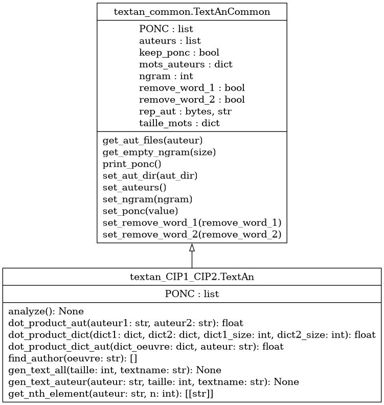

Module textan_CIP1_CIP2
Diagramme de classe
{kind=link}
Code du module
Ce fichier contient la classe TextAn, à utiliser pour résoudre la problématique. C’est un gabarit pour l’application de traitement des fréquences de mots dans les oeuvres d’auteurs divers.
Les méthodes apparaissant dans ce fichier définissent une API qui est utilisée par l’application de test test_textan.py Les paramètres d’entrée et de sortie (Application Programming Interface, API) sont définis, mais le code est à écrire au complet. Vous pouvez ajouter toutes les méthodes et toutes les variables nécessaires au bon fonctionnement du système
La classe TextAn est invoquée par la classe TestTextAn (contenue dans test_textan.py) :
Tous les arguments requis sont présents et accessibles dans args (dans le fichier test_textan.py)
- Notevous pouvez tester votre code en utilisant les commandes :
« python test_textan.py »
« python test_textan.py -h » (donne la liste des arguments possibles)
« python test_textan.py -v » (mode « verbose », qui indique les valeurs de tous les arguments)
Copyright 2018-2023, F. Mailhot et Université de Sherbrooke
- class textan_CIP1_CIP2.TextAn[source]
Bases :
TextAnCommonClasse à utiliser pour coder la solution à la problématique :
- La classe héritée TextAnCommon contient certaines fonctions de base pour faciliter le travail :
recherche des auteurs
ouverture des répertoires
et autres (voir la classe TextAnCommon pour plus d’information)
La classe ParsingClassTextAn est héritée par TextAnCommon et lit la ligne de commande
Les interfaces du code à développer sont présentes, mais tout le code est à écrire
- En particulier, il faut compléter les fonctions suivantes :
dot_product_dict (dict1, dict2)
dot_product_aut (auteur1, auteur2)
doct_product_dict_aut (dict, auteur)
find_author (oeuvre)
gen_text (auteur, taille, textname)
get_nth_element (auteur, n)
analyze()
Copyright 2018-2023, F. Mailhot et Université de Sherbrooke
Initialize l’objet de type TextAn lorsqu’il est créé
- Args :
(void) : Utilise simplement les informations fournies dans la classe TextAnCommon
- Returns :
(void) : Ne fait qu’initialiser l’objet de type TextAn
- PONC = ['!']
- analyze() None[source]
Fait l’analyse des textes fournis, en traitant chaque oeuvre de chaque auteur
- Args :
void : toute l’information est contenue dans l’objet TextAn
- Returns :
void : ne retourne rien, toute l’information extraite est conservée dans des structures internes
- dot_product_aut(auteur1: str, auteur2: str) float[source]
Calcule le produit scalaire normalisé entre les oeuvres de deux auteurs, en utilisant dot_product_dict()
- Args :
auteur1 (str) : le nom du premier auteur auteur2 (str) : le nom du deuxième auteur
- Returns :
dot_product (float) : Le produit scalaire normalisé des n-grammes de deux auteurs
Copyright 2023, F. Mailhot et Université de Sherbrooke
- static dot_product_dict(dict1: dict, dict2: dict, dict1_size: int, dict2_size: int) float[source]
Calcule le produit scalaire NORMALISÉ de deux vecteurs représentés par des dictionnaires
- Args :
dict1 (dict) : le premier vecteur dict2 (dict) : le deuxième vecteur
- Returns :
dot_product (float) : Le produit scalaire normalisé de deux vecteurs
Copyright 2023, F. Mailhot et Université de Sherbrooke
- dot_product_dict_aut(dict_oeuvre: dict, auteur: str) float[source]
- Calcule le produit scalaire normalisé entre une oeuvre inconnue et les oeuvres d’un auteur,
en utilisant dot_product_dict()
- Args :
dict_oeuvre (dict) : la liste des n-grammes d’une oeuvre inconnue auteur (str) : le nom d’un auteur
- Returns :
dot_product (float) : Le produit scalaire normalisé des n-grammes de deux auteurs
Copyright 2023, F. Mailhot et Université de Sherbrooke
- find_author(oeuvre: str) [][source]
- Après analyse des textes d’auteurs connus, retourner la liste d’auteurs
et le niveau de proximité (un nombre entre 0 et 1) de l’oeuvre inconnue avec les écrits de chacun d’entre eux
- Args :
oeuvre (str) : Nom du fichier contenant l’oeuvre d’un auteur inconnu
- Returns :
resultats (Liste[(string, float)]) : Liste de tuples (auteurs, niveau de proximité), où la proximité est un nombre entre 0 et 1)
- gen_text_all(taille: int, textname: str) None[source]
Après analyse des textes d’auteurs connus, produire un texte selon des statistiques de l’ensemble des auteurs
- Args :
taille (int) : Taille du texte à générer textname (str) : Nom du fichier texte à générer.
- Returns :
void : ne retourne rien, le texte produit doit être écrit dans le fichier « textname »
- gen_text_auteur(auteur: str, taille: int, textname: str) None[source]
Après analyse des textes d’auteurs connus, produire un texte selon des statistiques d’un auteur
- Args :
auteur (str) : Nom de l’auteur à utiliser taille (int) : Taille du texte à générer textname (str) : Nom du fichier texte à générer.
- Returns :
void : ne retourne rien, le texte produit doit être écrit dans le fichier « textname »
- get_nth_element(auteur: str, n: int) [[<class 'str'>]][source]
Après analyse des textes d’auteurs connus, retourner le n-ième plus fréquent n-gramme de l’auteur indiqué
- Args :
auteur (str) : Nom de l’auteur à utiliser n (int) : Indice du n-gramme à retourner
- Returns :
ngram (List[Liste[string]]) : Liste de liste de mots composant le n-gramme recherché (il est possible qu’il y ait plus d’un n-gramme au même rang)
Note
Documentation créée le 13 févr. 2024.